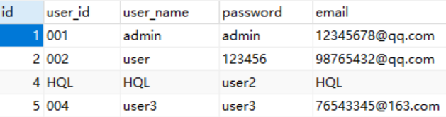

Hibernate核心接口（5个）
在 Hibernate 中有 5 个常用的核心接口，它们分别是 Configuration 接口、SessionFactory 接口、Session 接口、Transaction 接口和 Query 接口。本节，我们就对这 5 个核心接口进行详细讲解。
在 Hibernate 应用启动时，需要获取一些基本信息，例如，数据库 URL、数据库用户名、数据库用户密码、数据库驱动程序和数据库方言等等。这些属性都可以在 Hibernate 的核心配置文件（hiberntae.cfg.xml）中进行设置。
若 Hibernate 核心配置文件没有在项目的类路径（ src 目录）下，则需要在 configure() 方法中传入一个参数指定配置文件位置，示例代码如下：
1. 调用 Configuration 提供的 addResource() 方法，并在该方法中传入一个参数指定映射文件的位置，示例代码如下。
2. 调用 Configuration 提供的 addClass() 方法，并将与映射文件对应的实体类以参数的形式传入该方法中，示例代码如下。
使用 addClass() 方法加载映射文件时，需要同时满足以下 2 个条件，否则将无法加载映射文件。
需要注意的是，Configuration 对象只存在于系统的初始化阶段，将 SessionFactory 创建完成后，它的使命就完成了。
SessionFactory 对象中保存了当前的数据库配置信息、所有映射关系以及 Hibernate 自动生成的预定义 SQL 语句，同时它还维护了 Hibernate 的二级缓存。
一个 SessionFactory 实例对应一个数据库存储源，Hibernate 应用可以从 SessionFactory 实例中获取 Session 实例。
SessionFactory 具有以下特点：
例如，在 hibernate-demo 项目的 net.biancheng.www.utils 包下，创建一个工具类 HibernateUtils，代码如下。
Session 具有以下特点：
Session 对象维护了 Hibernate 的一级缓存，在显式执行 flush 之前，所有的持久化操作的数据都缓存在 Session 对象中。
1.调用 SessionFactrory 提供的 openSession() 方法，来获取 Session 对象，示例代码如下。
以上 2 种方式都能获取 Session 对象，但两者的区别在于：
1. 调用 Session 提供的 beginTransaction() 方法获取 Transaction 对象，示例代码如下。
2. 调用 Session 提供的 getTransaction() 方法获取 Transaction 对象，示例代码如下。
以上两个方法均可以获取 Transaction 对象，但两者存在以下不同：
Transation 接口中提供了管理事务的方法，常用方法如下表。
在 Hibernate 应用中使用 Query 对象进行查询，通常需要以下步骤：
HQL 查询的实例，请参考 Hibernate 增删改查操作中的 HQL 查询，这里就不再赘述。
除了 getResultList() 方法外，Query 接口中还包含一些其他的常用方法，如下表。
下面我们通过一个实例，演示如何使用 HQL 进行更新和删除操作，代码如下。
执行该测试方法，控制台输出如下。
查看数据库 user 表，结果如下。
1. Configuration
正如其名，Configuration 主要用于管理 Hibernate 配置信息，并在启动 Hibernate 应用时，创建 SessionFactory 实例。在 Hibernate 应用启动时，需要获取一些基本信息，例如，数据库 URL、数据库用户名、数据库用户密码、数据库驱动程序和数据库方言等等。这些属性都可以在 Hibernate 的核心配置文件（hiberntae.cfg.xml）中进行设置。
创建 Configuration 实例
Hibernate 通常使用以下方式创建 Configuration 实例，此时 Hibernate 会自动在当前项目的类路径（CLASSPATH）中，搜索核心配置文件 hibernate.cfg.xml 并将其加载到内存中，作为后续操作的基础配置 。Configuration configuration = new Configuration().configure();
若 Hibernate 核心配置文件没有在项目的类路径（ src 目录）下，则需要在 configure() 方法中传入一个参数指定配置文件位置，示例代码如下：
Configuration configuration = new Configuration().configure("/net/biancheng/www/mapping/hibernate.cfg.xml");
加载映射文件
我们知道，在 Hibernate 的核心配置文件中，<mapping> 元素用来指定 Hibernate 映射文件的位置信息，加载映射文件，但该元素并非核心配置文件中的必须元素，即我们可以不在 hibernate.cfg.xml 中指定映射文件的位置。此时，我们可以通过 2 种方式加载映射文件。1. 调用 Configuration 提供的 addResource() 方法，并在该方法中传入一个参数指定映射文件的位置，示例代码如下。
configuration.addResource("net/biancheng/www/mapping/User.hbm.xml");
2. 调用 Configuration 提供的 addClass() 方法，并将与映射文件对应的实体类以参数的形式传入该方法中，示例代码如下。
configuration.addClass(User.class);
使用 addClass() 方法加载映射文件时，需要同时满足以下 2 个条件，否则将无法加载映射文件。
- 映射文件的命名要规范，即映射文件要完全按照“实体类.hbm.xml ”的形式命名；
- 映射文件要与实体类在同一个包下。
需要注意的是，Configuration 对象只存在于系统的初始化阶段，将 SessionFactory 创建完成后，它的使命就完成了。
2. SessionFactory
SessionFactory 对象用来读取和解析映射文件，并负责创建和管理 Session 对象。SessionFactory 对象中保存了当前的数据库配置信息、所有映射关系以及 Hibernate 自动生成的预定义 SQL 语句，同时它还维护了 Hibernate 的二级缓存。
一个 SessionFactory 实例对应一个数据库存储源，Hibernate 应用可以从 SessionFactory 实例中获取 Session 实例。
SessionFactory 具有以下特点：
- SessionFactory 是线程安全的，它的同一个实例可以被应用多个不同的线程共享。
- SessionFactory 是重量级的，不能随意创建和销毁它的实例。如果应用只访问一个数据库，那么在应用初始化时就只需创建一个 SessionFactory 实例；如果应用需要同时访问多个数据库，那么则需要为每一个数据库创建一个单独的 SesssionFactory 实例。
SessionFactory 之所以是重量级的，是因为它需要一个很大的缓存，用来存放预定义 SQL 语句以及映射关系数据等内容。我们可以为 SessionFactory 配置一个缓存插件，它被称为 Hiernate 的二级缓存，此处了解即可，我们会在后面详细介绍。
创建 SessionFactory 对象
通常情况下，我们通过 Configuration 的 buildSessionFactory() 方法来创建 SessionFactory 的实例对象，示例代码如下。SessionFactory sessionFactory = configuration.buildSessionFactory();
抽取工具类
由于 SessionFactory 是重量级的，它的实例不能随意创建和销毁，因此在实际开发时，我们通常会抽取出一个工具类，将 SessionFactory 对象的创建过程放在静态代码快中，以避免 SessionFactory 对象被多次创建。例如，在 hibernate-demo 项目的 net.biancheng.www.utils 包下，创建一个工具类 HibernateUtils，代码如下。
package net.biancheng.www.utils;
import org.hibernate.Session;
import org.hibernate.SessionFactory;
import org.hibernate.cfg.Configuration;
/**
* 工具类
*/
public class HibernateUtils {
private static final Configuration configuration;
private static final SessionFactory sessionFactory;
//在静态代码块中创建 SessionFactory 对象
static {
configuration = new Configuration().configure();
sessionFactory = configuration.buildSessionFactory();
}
//通过 SessionFactory 对象创建 Session 对象
public static Session openSession() {
return sessionFactory.openSession();
}
public static void main(String[] args) {
// openSession();
HibernateUtils hibernateUtils = new HibernateUtils();
}
}
由以上代码可知，我们直接调用 HibernateUtils 的 getSession() 的方式，便可以获取 Session 对象。
3. Session
Session 是 Hibernate 应用程序与数据库进行交互时，使用最广泛的接口，它也被称为 Hibernate 的持久化管理器，所有持久化对象必须在 Session 的管理下才可以进行持久化操作。持久化类只有与 Session 关联起来后，才具有了持久化的能力。Session 具有以下特点：
- 不是线程安全的，因此应该避免多个线程共享同一个 Session 实例；
- Session 实例是轻量级的，它的创建和销毁不需要消耗太多的资源。通常我们会将每一个Session 实例和一个数据库事务绑定，每执行一个数据库事务，不论执行成功与否，最后都因该调用 Session 的 Close() 方法，关闭 Session 释放占用的资源。
Session 对象维护了 Hibernate 的一级缓存，在显式执行 flush 之前，所有的持久化操作的数据都缓存在 Session 对象中。
这里的持久化指的是对数据库数据的保存、更新、删除和查询。持久化类指与数据库表建立了映射关系的实体类，持久化对象指的是持久化类的对象。
关于持久化以及一级缓存的概念，这里了解即可，我们会在 Hibernate 持久化类和 Hibernate 一级缓存中详细讲解。
创建 Session 对象
我们可以通过以下 2 个方法创建 Session 对象：1.调用 SessionFactrory 提供的 openSession() 方法，来获取 Session 对象，示例代码如下。
//采用 openSession() 方法获取 Session 对象 Session session = sessionFactory.openSession();
2. 调用SessionFactrory 提供的 getCurrentSession() 方法，获取 Session 对象，示例代码如下。
//采用 getCurrentSession() 方法获取 Session 对象 Session session = sessionFactory.getCurrentSession();
以上 2 种方式都能获取 Session 对象，但两者的区别在于：
- 采用 openSession() 方法获取 Session 对象时，SessionFactory 直接创建一个新的 Session 实例，且在使用完成后需要调用 close() 方法进行手动关闭。
- 采用 getCurrentSession() 方法创建的 Session 实例会被绑定到当前线程中，它在事务提交或回滚后会自动关闭。
Session 中的持久化方法
在 Session 中，提供了多个持久化的操作方法，其常用方法如下表。| 方法 | 描述 |
|---|---|
| save() | 执行插入操作 |
| update() | 执行修改操作 |
| saveOrUpdate() | 根据参数，执行插入或修改操作 |
| delete() | 执行删除操作 |
| get() | 根据主键查询数据（立即加载） |
| load() | 根据主键查询数据（延迟加载） |
| createQuery() | 获取 Hibernate 查询对象 |
| createSQLQuery() | 获取 SQL 查询对象 |
注意：Hibernate 中的 Session 与 Java Web 中的 HttpSession 没有任何关系，如无特别说明，本教程中的 Session 都指的是 Hibernate 中的 Session。
4. Transaction
Transaction 是 Hibernate 提供的数据库事务管理接口，它对底层的事务接口进行了封装。所有的持久化操作（即使是只读操作）都应该在事务管理下进行，因此在进行 CRUD 持久化操作之前，必须获得 Trasaction 对象并开启事务。获取 Transaction 对象
我们可以通过 Session 提供的以下两个方法来获取 Transaction 对象：1. 调用 Session 提供的 beginTransaction() 方法获取 Transaction 对象，示例代码如下。
Transaction transaction = session.beginTransaction();
2. 调用 Session 提供的 getTransaction() 方法获取 Transaction 对象，示例代码如下。
Transaction transaction1 = session.getTransaction();
以上两个方法均可以获取 Transaction 对象，但两者存在以下不同：
- getTransaction() 方法：根据 Session 获得一个 Transaction 对象，但是并没有开启事务。
- beginTransaction() 方法：是在根据 Session 获得一个 Transaction 对象后，又继续调用 Transaction 的 begin() 方法，开启了事务。
Transation 接口中提供了管理事务的方法，常用方法如下表。
| 方法 | 描述 |
|---|---|
| begin() | 该方法用于开启事务 |
| commit() | 该方法用于提交事务 |
| rollback() | 该方法用于回滚事务 |
提交或回滚事务
持久化操作执行完成后，需要调用了 Transaction 接口的 commit() 方法进行事务提交，只有在事务提交后，才能真正地将数据同步到数据库中。当发生异常时，则需要调用 rollback() 方法进行事务回滚，以避免数据发生错误，示例代码如下。
@Test
public void test() {
User user = new User();
Session session = HibernateUtils.openSession();
//获取事务对象
Transaction transaction = session.getTransaction();
//开启事务
transaction.begin();
try {
//执行持久化操作
Serializable save = session.save(user);
//提交事务
transaction.commit();
} catch (Exception e) {
//发生异常回滚事务
transaction.rollback();
} finally {
//释放资源
session.close();
}
}
5. Query
Query 是 Hibernate 提供的查询接口，主要用执行 Hinernate 的查询操作。Query 对象中通常包装了一个 HQL（Hibernate Query Language）语句，HQL 语句与 SQL 语句存在相似之处，但 HQL 语句是面向对象的，它使用的是类名和类的属性名，而不是表名和表中的字段名。HQL 能够提供更加丰富灵活、更为强大的查询能力，因此 Hibernate 官方推荐使用 HQL 进行查询。在 Hibernate 应用中使用 Query 对象进行查询，通常需要以下步骤：
- 获得 Hibernate 的 Sesssin 对象；
- 定义 HQL 语句；
- 调用 Session 接口提供的 createQuery() 方法创建 Query 对象，并将 HQL 语句以参数的形式传入到该方法中；
- 若 HQL 语句中包含参数，则调用 Query 接口提供的 setXxx() 方法设置参数；
- 调用 Query 的 getResultList() 方法，进行查询，并获取查询结果集。
HQL 查询的实例，请参考 Hibernate 增删改查操作中的 HQL 查询，这里就不再赘述。
除了 getResultList() 方法外，Query 接口中还包含一些其他的常用方法，如下表。
| 方法 | 描述 |
|---|---|
| setXxx() | Query 接口中提供了一系列 setXxx() 方法，用于设置查询语句中的参数。这些方法都需要两个参数，分别是：参数名或占位符位置、参数值。我们需要根据参数类型的不同，分别调用不同的 setXxx() 方法，例如 setString()、setInteger()、setLong()、setBoolean() 和 setDate() 等等。 |
| Iterator<R> iterate(); | 该方法用于执行查询语句，并返回一个 Iterator 对象。我们可以通过返回的 Iterator 对象，遍历得到结果集。 |
| Object uniqueResult(); | 该方法用户执行查询，并返回一个唯一的结果。使用该方法时，需要确保查询结果只有一条数据，否则就会报错。 |
| int executeUpdate(); | 该方法用于执行 HQL 的更新和删除操作。 |
| Query<R> setFirstResult(int var1); | 该方法用户设置结果集第一条记录的位置，即设置从第几条记录开始查询，默认从 0 开始。 |
| Query<R> setMaxResults(int var1); | 该方法用于设置结果集的最大记录数，通常与 setFirstResult() 方法结合使用，用于限制结果集的范围，以实现分页功能。 |
除了数据库查询外，HQL 语句还可以进行更新和删除操操作，需要注意的是 HQL 并不支持 insert 操作，想要保存数据请使用 Session 接口提供的 save() 或 saveOrUpate() 方法。
下面我们通过一个实例，演示如何使用 HQL 进行更新和删除操作，代码如下。
@Test
public void testHqlInsert() {
//获取 Session 对象
Session session = HibernateUtils.openSession();
//获取事务对象
Transaction transaction = session.getTransaction();
//开启事务
transaction.begin();
//更新操作
Query query = session.createQuery("update User SET userName=:username,userId=:userId,email=:email where id=:id");
//为更新语句设置参数
query.setParameter("username", "HQL");
query.setParameter("userId", "HQL");
query.setParameter("email", "HQL");
query.setParameter("id", 4);
//执行更新操作
int i = query.executeUpdate();
if (i > 0) {
System.out.println("成功修改了 " + i + " 条记录");
}
//删除操作
Query query1 = session.createQuery("delete from User WHERE userId=?1");
//为删除语句设置参数
query1.setParameter(1, "005");
//执行删除操作
int d = query1.executeUpdate();
if (d > 0) {
System.out.println("成功删除了 " + d + " 条记录");
}
//提交事务
transaction.commit();
//释放资源
session.close();
}
执行该测试方法，控制台输出如下。
Hibernate:
update
user
set
user_name=?,
user_id=?,
email=?
where
id=?
成功修改了 1 条记录
Hibernate:
delete
from
user
where
user_id=?
成功删除了 1 条记录
查看数据库 user 表，结果如下。

图1：HQL 更新删除结果
从上图可知，我们成功地使用 HQL 进行更新和删除操作。图1：HQL 更新删除结果
关注公众号「站长严长生」，在手机上阅读所有教程，随时随地都能学习。内含一款搜索神器，免费下载全网书籍和视频。

微信扫码关注公众号